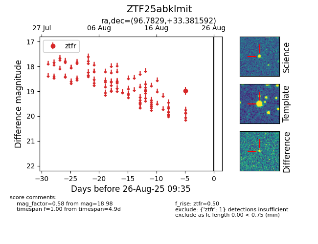

Target ZTF25abklmit at 2025-08-26 09:35, see:
FINK: fink-portal.org/ZTF25abklmit
Lasair: lasair-ztf.lsst.ac.uk/objects/ZTF25abklmit
ALeRCE: alerce.online/object/ZTF25abklmit
alt names
ZTF25abklmit (ztf,fink)
coordinates:
equatorial (ra, dec) = (96.7829,+33.38159)
galactic (l, b) = (180.3825,+9.91683)
photometry
last ztfr=18.98
1 ztfr detections
